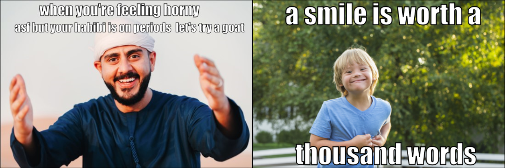
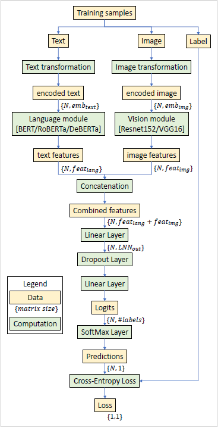

Multimodal (LLM and Vision) Deep Learning Pipeline: Detection of Hateful Memes on Social Media#
Introduction#
The rise of social media has led to an increase in harmful content, including hateful memes. In response, Facebook [1] launched a competition to develop methods for detecting such memes.
The primary objective of this project is to enhance the performance of hateful meme detection models. This involves not only achieving high accuracy but also ensuring that the models are capable of generalizing well across diverse datasets and meme formats. The project explores a range of cutting-edge deep learning architectures, and employs various data preprocessing and augmentation techniques to optimize performance. Memes in the dataset range from highly offensive to benign as shown in below example.

Approach:#
The winning solution of the original Facebook competition utilized the ConcatBERT model. Therefore, our approach aims to enhance ConcatBERT’s performance on the Hateful Memes dataset. To achieve this, we adopt a three-pronged strategy:
Model Enhancement: We incorporate advanced variations of the BERT model, such as RoBERTa and DeBERTa, to improve feature extraction and contextual understanding. Data Augmentation & Preprocessing: We apply various data preprocessing techniques along with image and text augmentation to improve model robustness and generalization. Multimodal Model Integration: We evaluate state-of-the-art multimodal models, including ALFRED, Pro-Cap Prompt Hate, and CLIP, in conjunction with our data augmentation strategies to analyze potential performance gains. This approach systematically refines ConcatBERT’s capabilities while leveraging advanced architectures and augmentation methods for optimal performance.
Environment#
Facebook provides the MMF framework for various multimodal research tasks, including Hateful Memes and TextVQA. Initially, we set up the environment on a local machine, but due to high computational requirements, we migrated the setup to Google Colab. However, running MMF on Colab presented several challenges, including library compatibility issues and limited flexibility in modifying models within the framework. To overcome these limitations, we opted to build the model from scratch, referencing [2]. We developed the training pipeline using PyTorch Lightning to facilitate efficient experimentation and metric logging. PyTorch Lightning simplifies the implementation of PyTorch models by offering a high-level interface for code organization, training loop management, and handling essential tasks such as checkpointing and logging.
Dataset#
Facebook created a custom dataset[4] consisting of over 10,000 image-text pairs, each labeled as either Hateful or Not Hateful. The dataset includes five distinct types of memes, designed to capture various linguistic and visual nuances. One notable category within the dataset is Benign Confounders—these are memes where altering either the image or text with a single modification would render them non-hateful.
Meme Type |
Definition |
% |
|---|---|---|
Multimodal Hate |
Benign confounders are found for both modalities. |
40% |
Unimodal Hate |
One or both modalities were already hateful on their own. |
10% |
Benign Image |
The image is non-offensive. |
20% |
Benign Text |
The text is non-offensive. |
20% |
Random Not-Hateful |
Nothing about the meme can be construed as offensive. |
10% |
Data Preparation#
Due to the multimodal nature of the dataset, we hypothesized that the image model might learn low-level text features. To prevent this, we explored various methods for eliminating text from images. Below are the three approaches used.
Include an inpainting model based on Stable Diffusion through a Python packaged called Detextify.
An inpainting model which used OpenCV’s built-in processing capabilities and Frozen East Text Detection as seen in Hate-CLIPper.
Image cropping with Frozen East Text Detection. We also explored a text augmentation technique for creating synthetic data. These techniques were implemented with python’s NLPaug Package.
Model Development#
For this project, we utilized a Concat BERT model as the baseline architecture. Given the multimodal nature of the dataset, we adopted separate models for processing the image and text components. The text and image features extracted by these individual models are concatenated and subsequently passed through a multilayer perceptron for further processing. The architecture was designed with flexibility in mind, enabling easy swapping of language and vision modules for various experimental configurations. For the image module, we experimented with ResNet152, VGG16, and ConvNext. Ultimately, ResNet152 outperformed the others, and thus, it was selected for all subsequent experiments. Below figure shows the implementation of the concatBERT architecture in pytorch lightning module.

Result#
In alignment with the three-pronged strategy, we conducted a series of experiments:
Experiment 1: We evaluated different language modules (e.g., ConcatRoBERTa and ConcatDeBERTa) combined with the ResNet152 vision module within the ConcatBERT framework.
Experiment 2: We applied various data augmentation techniques in conjunction with ConcatBERT, ConcatRoBERTa, and ConcatDeBERTa.
Experiment 3: We explored the use of the Contrastive Language-Image Pre-Training (CLIP) model for multimodal learning. These experiments were designed to assess the impact of different configurations on model performance.
Model |
Accuracy |
|---|---|
Multimodal Concat BERT (baseline) |
67.77% |
Multimodal Concat BERT (ours) |
61.65% |
Multimodal Concat BERT - Image Cropping |
60.14% |
Multimodal Concat BERT - Inpainting w/ Frozen East Text Detection |
62.53% |
Multimodal Concat BERT - Text Augmentation w/ Contextual Word Embeddings |
60.96% |
Multimodal Concat BERT - Text Augmentation w/ Synonym Replacement |
59.20% |
Multimodal Concat DeBERTa |
58.89% |
Multimodal Concat RoBERTa |
52.67% |
Multimodal Concat RoBERTa - Transformer Encoder with 3 layers |
59.63% |
Multimodal Concat RoBERTa - Transformer Encoder with ConvNext |
56.87% |
Multimodal CLIP LPE (ViT-B/32) - Baseline |
62.40% |
Multimodal CLIP LPE (ViT-B/32) - Web Entity Tags |
64.40% |
Multimodal CLIP LPE (ViT-B/32) - WOAH Protected Categories |
85.30% |
Multimodal CLIP LPE (ViT-B/32) - WOAH Attack Types |
88.68% |
References#
[1] Facebook is paying Accenture $500m a year to moderate content on its platforms. https://thehustle.co/09072021-facebook-accenture-moderation.
[2] How to build a multimodal deep learning model to detect hateful memes. https://drivendata.co/blog/hateful-memes-benchmark/, 2024. Accessed: April 27, 2024. 2, 3
[3] Facebookresearch/fine grained hateful memes. facebookresearch/fine_grained_hateful_memes.
[4] Hateful Memes Dataset : https://arxiv.org/abs/2005.04790
[5] Hateful Memes Challenge : https://www.drivendata.org/competitions/64/hateful-memes/
Contact#
Contact us at poonamsdongare04@gmail.com or pankajkalan@gmail.com to access the complete paper and implementation code.